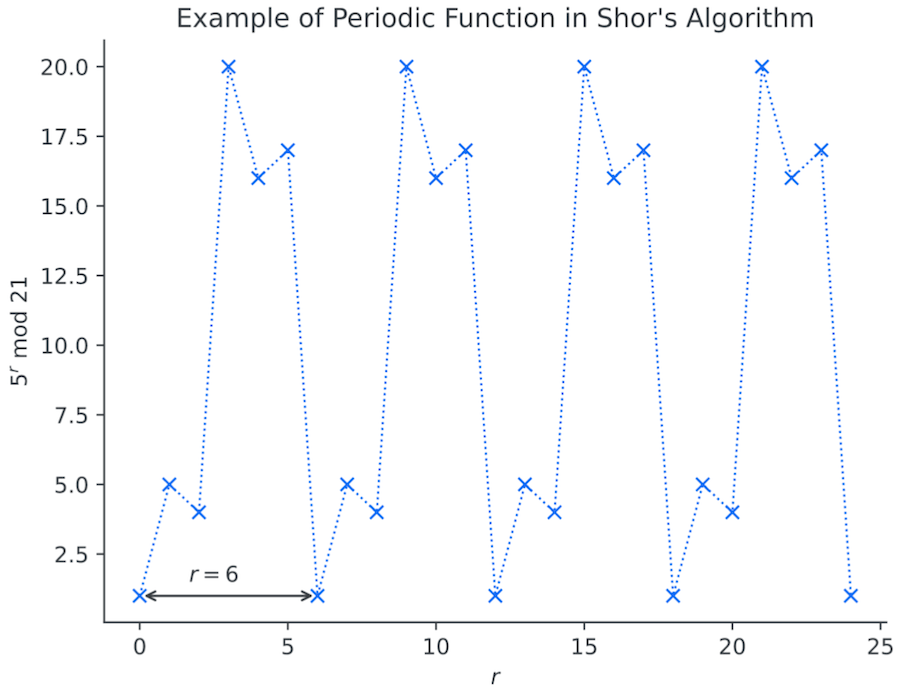

2. ショアのアルゴリズム（初学者向け解説）#
コンテンツ#
ショアのアルゴリズム選定理由
ショアのアルゴリズム解説
2-1 ダイアグラム
2-2 位数
2-3 解説
2-4 計算例Qiskitの利用
3-1 Qiskit日本語版と英語版
3-2 Qiskitの比較まとめ
1. ショアのアルゴリズム選定理由#
A) 量子コンピュータの利用の優位性を認識
B) 量子位相推定、量子フーリエ変換も学習
C) Qiskitを利用し量子コンピュータで実行
2. ショアのアルゴリズム解説#
2-1 ダイアグラム#
自然数Mについて因数を求めます。 a,b,p,q,r,x を以下と設定します。 M＝pqとなるp,qを求める。(p,qは因数) a,bはa≧1, b≧2 xは、1< x ≦ M-1 r
ステップ5を量子アルゴリズム/量子コンピュータにて短時間で実施することで計算量を大幅に削減することが可能となります。他のステップについては古典コンピュータにて実施しています。
2-2 位数とは？#
自然数 Mと相互に素なxを仮定して因数を求めたい時 x^r をMで割ったあまりがyとすると
\( 𝑦=𝑥^r mod M \) ・・・・①
が関係式となります。
ここでM=21 x=5 とした時に yとrの関係を表とグラフで表すと周期性があることがわかります。
この時y=1となるrは周期的になっていることがわかります。
この時、最小の自然数 r を位数 とします。
この例では、位数＝６ となります。

①式を変換していきます。
\( 𝑦=𝑥^r mod M \)
y=1を代入して
\( 1=𝑥^𝑟 mod 𝑀 \)
モジュラー関数からMの倍数で表現すると
\( 𝑥^𝑟=𝑚𝑀+1 \)
両辺から1を引いて
\( 𝑥^𝑟−1=𝑚𝑀 \)
これを因数分解すると
\( (x^\frac{r}{2}+1)(x^\frac{r}{2}-1)=mM \)
となります。
再度モジュラー関数にて変換すると
\( (x^\frac{r}{2}+1)(x^\frac{r}{2}-1)modM=0 \) ・・・・②
②から \( (x^\frac{r}{2}+1)\) または \( (x^\frac{r}{2}-1)\) がMと同じ約数を持つはずとわかります。
ここで\( \frac{r}{2} \) が正数でなければ \( x^\frac{r}{2} \) が整数になりませんので
必ずrは偶数である必要があります。
もしrが算出された後、奇数の場合には残念ながらxの再設定から実施する必要があります。
ここで、
\( gcd ((x^\frac{r}{2}+1),M) > 1 \) ・・・・ ③ または \( gcd ((x^\frac{r}{2}-1),M) > 1 \) ・・・・ ④ の際にMとの公約数が因数となります。
例 M=21 x=5 の場合
r=6ですので③、④式に代入すると
\( gcd ((x^\frac{r}{2}+1),M) > 1 \)
\( gcd ((5^\frac{6}{2}+1),21) > 1 \)
\( gcd ((5^\frac{6}{2}+1),21) > 1 \)
\( gcd (126,21) > 1 \)
\( gcd(126,21=21 \)
==> うーむ・・・・
\( gcd ((x^\frac{r}{2}-1),M) > 1 \)
\( gcd ((5^\frac{6}{2}-1),21) > 1 \)
\( gcd (124,21) > 1 \)
\( gcd(124,21)=1 \)
==> こちらはなさそう・・・・
ステップ８ → ステップ７ に振り出しに戻ります。
気を取り直してxを再設定 例 M=21 x=2 の場合
r=6ですので③式に代入すると
\( gcd ((x^\frac{r}{2}+1),M) > 1 \)
\( gcd ((2^\frac{6}{2}+1),21) > 1 \)
\( gcd ((2^\frac{6}{2}+1),21) > 1 \)
\( gcd (9,21) > 1 \)
\( gcd(9,21)=3 \)
3
r=6ですので④式に代入すると
\( gcd ((x^\frac{r}{2}-1),M) > 1 \)
\( gcd ((2^\frac{6}{2}-1),21) > 1 \)
\( gcd (7,21) > 1 \)
\( gcd(7,21)=7 \)
7
おお！因数分解できました。 できるだけ小さい素数をxに設定するのが良さそうですね。
小さい数字でしたので、なんとかできていましたがビット数が増えていくと古典コンピュータではやりきれなくなります。 そこで量子アルゴリズムと量子コンピュータを適応してみましょう。
2-3 量子アルゴリズム解説#
分かりやすく量子回路にてみてみます。
固有値と位相キックバックとは
固有値は、何回ユニタリー行列を作用させても変化しない。
位相キックバックは、標的量子ビットの位相θを制御量子ビットに反映される 位相キックバックの効果は状態|1>でしか作用しません。(|1>以外の時は打ち消しあって消えてしまうからです。)
2-4 計算例#
M=21, x=5, n=4 の時
3. Qiskit Textbookの利用#
Qiskit Textbookを利用すればブラウザー上でショアのアルゴリズムを体験できます。 今回は、日本語版にて学習を実施しました。
https://ja.learn.qiskit.org/course/ch-algorithms/shors-algorithm
最初からつまづきました。
ModuleNotFoundError: No module named ‘tabulate’
実際の出力はこちら
検索を行うと先人は、問題なく実行できている・・・・ tabulateをimportしてもうまくいかない・・・・・
英語版を見てみてください。 とアドバイスをもらい確認
エラーのあった7行目
他のも確認してみると・・・・
from tabulate import tabulate から from pandas as pd に変更されている.
全体を通して確認すると複数の相違点が確認できました。
Referenceのversion情報をみてみるとqiskitのVersionが大きく違う！！
なるほど、英語版は最新が反映されているが、翻訳のタイミングで古い場合があるようです。
point
日本語版で構文エラーが発生した場合は、Versionの確認を行なって相違がある場合には英語版を参考に修正する